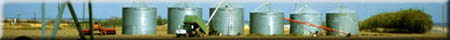
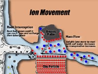

|
|  |
| Imagine you are a tiny creature trying to move around in the soil. Can you imagine the millions of pores of all sizes and shapes, many of which are blocked
by organic matter and mineral particles? The surfaces of these pores are very active and are capable of absorbing ions and organic
molecules. Once you have found your way around, the system changes with each wet-and-dry, or freeze-and-thaw cycle. Maybe a burrowing animal drops by and
creates a real mess of your little world. In short, the soil is a constantly changing system that has numerous barriers to the movement of organisms and chemicals.
In terms of soil fertility we are greatly interested in the soil physical system. For a nutrient to be available for the plant to take up it must first be the in the proper chemical form to pass the root membrane and most importantly it must be available at the root surface. The movement of nutrients in soil is dependent on their concentration in soil solution, how strongly they are absorbed by clays and organic matter, and how fast they can move. For any given nutrient if we know how it moves in soil then we can use this information to formulate and place fertilizers. As an example: phosphorus exists in soil solution as the orthophosphate ion (H2PO4- or HPO42-) in very low concentrations and is strongly adsorbed by the soil surfaces. In contrast, nitrogen usually has a much greater concentration in soil solution (usually as NO3-), and is very weakly adsorbed. Knowing these facts we then can determine that we must place fertilizer pellets very close to the seed to be effective whereas nitrogen can be broadcast over the surface of the soil where it can be washed down to plant roots. Nutrients move through the soil to plant roots in three ways:
|
|||
 Root Interception This is probably a weird way to look at movement of nutrients. Since it is the root that moves to the nutrient. The roots of plants are constantly expanding which open up blocked pores and grow from areas of depleted nutrients (e.g.because of plant uptake) to other regions where nutrients more concentrated. These nutrients are perhaps held on soil surfaces or in locked in fertilizer pellets. Although many plants such as cereals and grasses have a very extensive root system, they only can contact less than 5% of the soil volume. The root interception mechanism is very valuable, however, because root growth can extend to areas where mass flow and diffusion take over. For example a root could grow within a few millimetres of a phosphorus fertilizer pellet. Although the root does not technically bump into the nutrient and intercept it, the root is close enough for diffusion to occur. Mass Flow Growing plants are continually absorbing water from the soil profile. Dissolved in this water are soluble nutrients. These nutrients are thus transported along with the water to the root surface. Nutrients which are strongly adsorbed to the soil surfaces like phosphorus would never get there. But nitrogen which is held very weakly by soils readily moves long with the water. Nutrients that move by mass flow are those which have a high concentration in soil solution relative to the plant requirements e.g nitrate and sulphate. Diffusion The random movement of ions in response to thermal energy is called diffusion. Imagine you have a tank of water with a removable barrier in the middle. On one side of the barrier you have ink, the other side pure water. When you remove the barrier very slowly you will see the ink and water mixing due to random movement of molecules. This is the process of diffusion. Similarly if we place a particle of fertilizer into soil it will slowly dissolve and the solution will spread out slowly and mix with the soil solution. How slow is diffusion? Phosphorus will rarely move more than a few millimetres from a fertilizer granule in a whole growing season! It very important that we place this fertilizer so that the root can intercept it. Diffusion is the dominant mechanism of movement for phosphorus and most of the micronutrients. We can use our knowledge of ion movement to predict how individual nutrients are lost from soil by leaching. Which nutrients do you think will be lost most easily? |